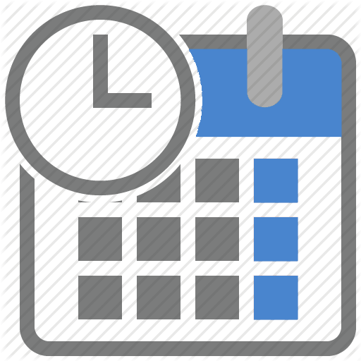
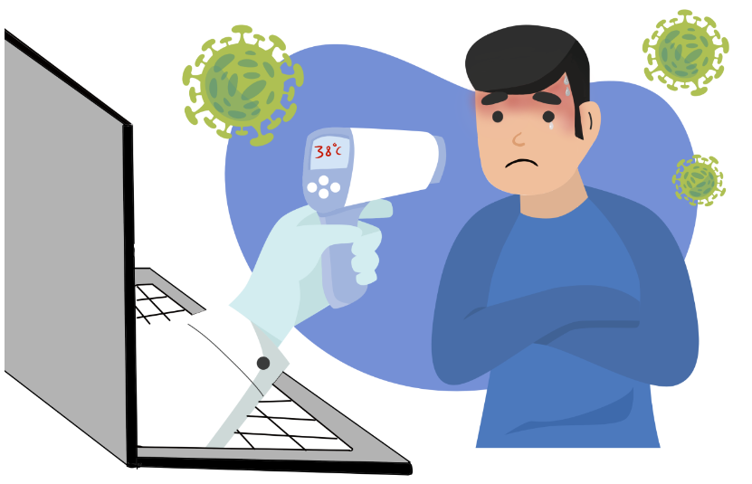
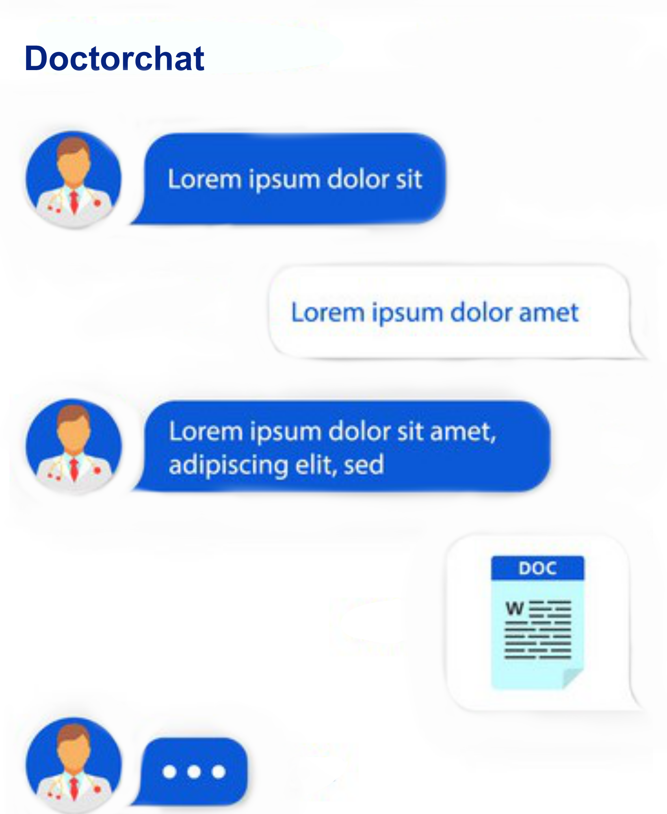

<ion-header  >
  <ion-toolbar>
    <ion-title>
      Über die App
    </ion-title>
  </ion-toolbar>
</ion-header>

<ion-content fullscreen scrollable> 

  <div class="wave-container" >
    
    
    <mat-vertical-stepper class="ion-padding">
      
      <mat-step>
        <ng-template matStepLabel><span style="color: white;">Patientenakte</span></ng-template>
        <div>
          
          <br>
          <ion-chip color="secondary">
            <ion-icon name="information-circle-outline"></ion-icon>
            <ion-label >Patientendaten für den Doktor</ion-label>
          </ion-chip>
        </div>
      </mat-step>
      <mat-step>
        <ng-template matStepLabel><span style="color: white;">Medizinischer Verlauf</span></ng-template>
        <div style="padding: 30px;">
          <br>
          <ion-chip color="secondary">
            <ion-icon name="information-circle-outline"></ion-icon>
            <ion-label >Chronologische Krankheitsgeschichte</ion-label>
          </ion-chip>
        </div>
      </mat-step>
      <mat-step>
        <ng-template matStepLabel><span style="color: white;">Automatisierte Behandlung</span></ng-template>
        <div>
          <br>
          <!-- <ion-button size="small" class="ion-text-capitalize"  fill="outline">Check your Tempreture</ion-button> -->
          <ion-chip  outline color="secondary">
            <ion-icon name="information-circle-outline"></ion-icon>
            <ion-label> Beschreibung des Zustandes des Patienten</ion-label>
          </ion-chip>
        </div>
      </mat-step>

      <mat-step>
        <div style="padding: 0px 0px 30px 0px; margin: 0;">
          
          <br>
          <ion-chip  outline color="secondary">
            <ion-icon name="information-circle-outline"></ion-icon>
            <ion-label>Diagnose Ergebnismitteilung</ion-label>
          </ion-chip>
          <ion-button href="/login"  fill="outline"class="ion-text-capitalize">Starten</ion-button>
        </div>
        <ng-template matStepLabel><span style="color: white;">Schnelles Gespräch </span></ng-template>
        
      </mat-step>

    </mat-vertical-stepper>
    
    

    </div>
</ion-content>


<ion-footer mode="ios" >
  <ion-toolbar mode="ios" >
    <ion-title mode="md" >
      <span class="ion-float-left">Doctorchat</span> 
      <span class="ion-float-right">Bleib zu Hause bleib gesund</span> 
    </ion-title>
  </ion-toolbar>
</ion-footer>


